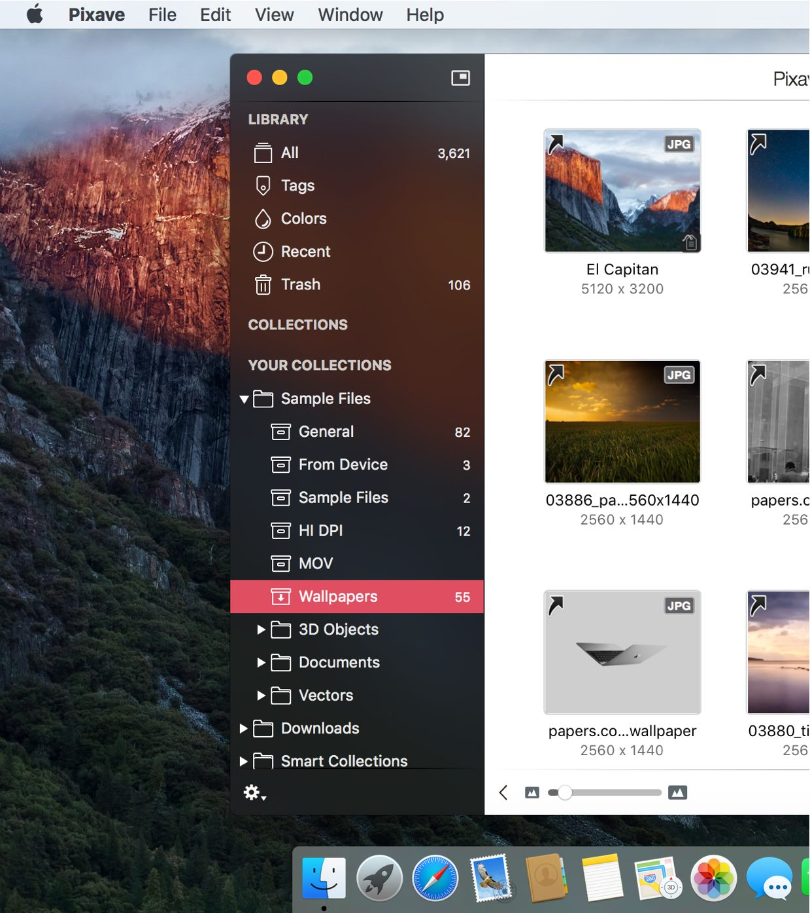
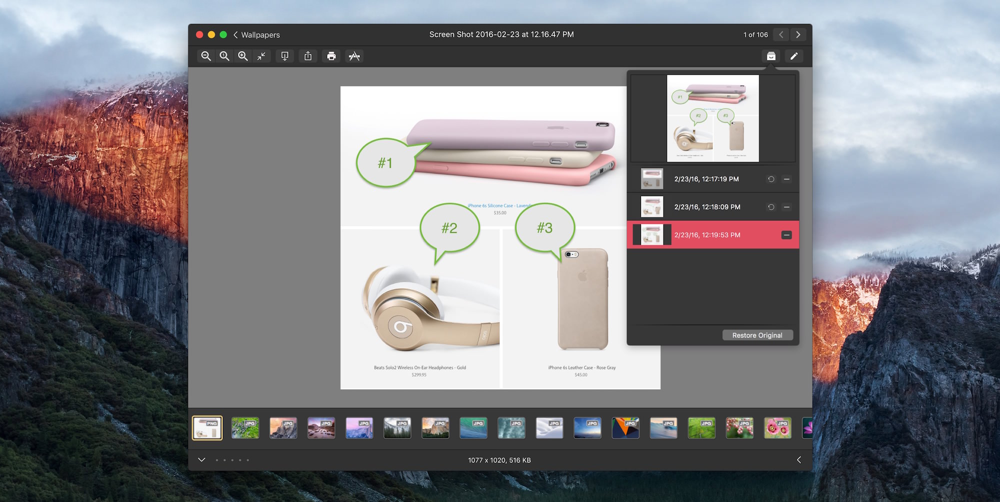
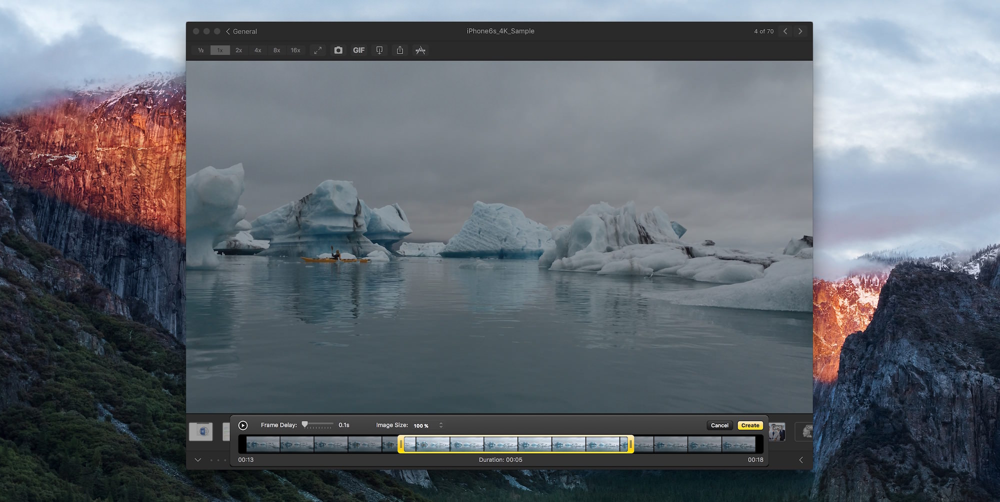
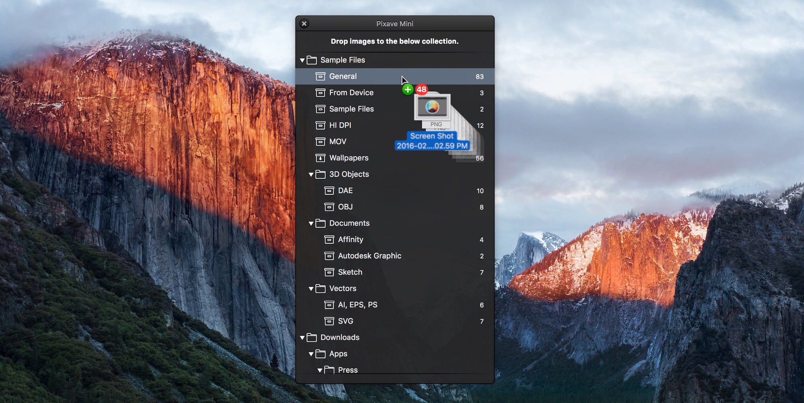
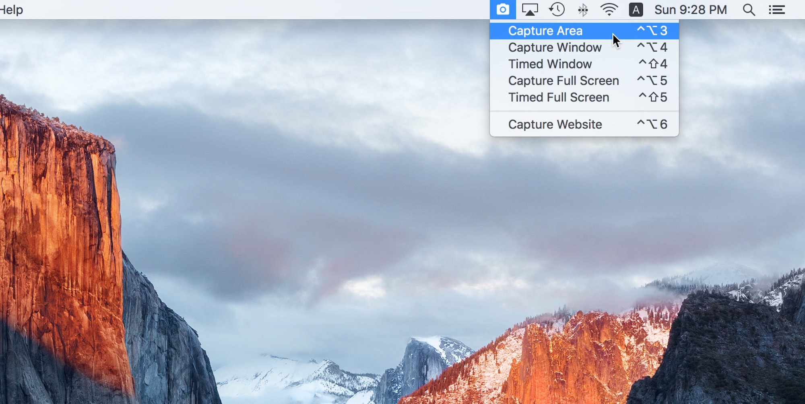
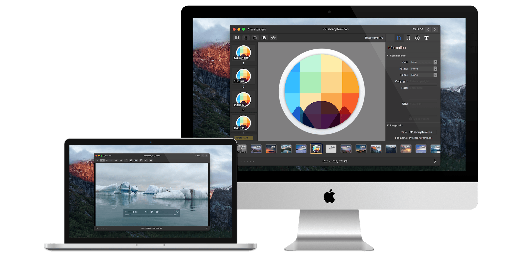
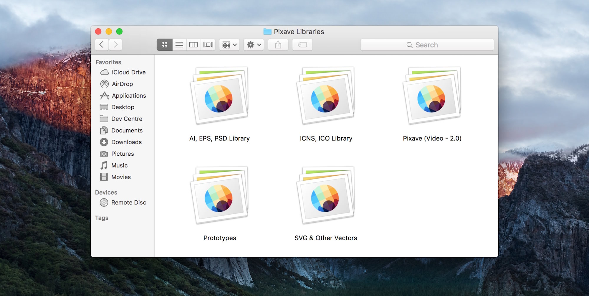

Introducing Pixave for macOS

There is a whole world that we get from images. A single picture can fill us with inspiration which, in turn, brings us joy. Such impressions grow to create wonder and amazement for the world. That growth and creation is made possible by you. And Pixave is here to store and organize those inspired moments - to enable you to bring them to mind whenever, wherever you are.
A beautiful workspace, more powerful than before
Pixave is the ultimate image organizer. The updated version includes the new Light/Dark user interface with the Collection now supporting auto-import, while the Smart Collection and System Collection has become more powerful and refined, providing this new version with an even more convenient and user-friendly workspace. You will be amazed at such useful features. Pixave’s innovative and useful workspace lays the groundwork for you to draw inspiration, unhindered, from your images - because your inspirations are precious and beautiful.
The New UI
Pixave enables you to access and manage your images conveniently and in a variety of ways with the new 'Light" and 'Dark" themed interface
More formats
Over 40% more formats are now supported than in version 1.0. Pixave will now truly play its role as a media hub.
Automation
Specified media, along with tag information, can now be automatically imported from a designated folder.
Easy Tagging
Adding and searching for tags is a piece of cake. Many tags can be applied immediately to a number of images, and can be searched for along with its tag.
Enhanced Web Capture
The web can be captured as a desktop or mobile page and web resources can be directly downloaded and imported.
Exciting Export
Images can be exported in a diverse range of formats with adjustable pixel, scale ratio and file naming rules, as well as applying Watermarks.
The New UI
Displayed in modes of ‘Light’ and ‘Dark’, the new interface provides the optimum setting to manage and access images. Most actions that you can imagine are possible, such as access to images in a diverse range of ways through features such as Collections, Folders, and Smart Collections; moving images using drag; and interlocking with other applications such as Finder.
But Pixave does not stop there. The separately detached Tag and Color windows and the main Pixave window mutually assist each other, allowing the user immediate access to the desired media. Through the beautiful interface you can now view and manage your images more intuitively than ever before. And such an approach is only possible with Pixave.
More Formats!
Pixave supports common image formats such as GIF, JPEG, JPEG 2000, PNG, TIFF, ICNS, AI, PSD, EPS (included PDF info only), HEIC, HEIF (Require macOS 10.13 or higher), PDF, TGA, SVG, BMP, ICO, Camera RAW , as well as document formats from Mac Graphic Killer applications such as *Affinity Designer, *Affinity Photo, *Pixelmator, *Pixelmator Pro, *Sketch, *Audodesk Graphic, *Acorn document.
And now, even more formats are supported: TrueType® Font, OpenType® Font, MOV, M4V, MP4, MPO (Multiple Picture Object Image), DAE for 3D Objects, OBJ files, EXR (OpenEXR image), *Apple Pages, *Numbers, *Keynote, *iBook Author, *MS Word, *Excel, *PowerPoint. Also the popular Mac software *OmniGraffle, *MindNode, *Comic Life 3, *Napkin, *Flinto, *iThoughtsX, *Principle, *Art Text 3, *Hype 3 document are supported.
(Formats with an asterisk “*” requires the relevant application to be already installed)
Automation
Specified media, along with tag information, can now be automatically imported from a designated folder. To import, images no longer need to be dragged, images no longer need to be clicked to apply tags, and image types no longer need to be separately categorized. Just place your desired files into the designated folder and Pixave will automatically import the selected media and automatically apply selected tags. Now importing media is taken care of automatically. How convenient!
Now, let’s begin the set-up.
Select the appropriate folder and the media to be imported
Select tags to be applied automatically during import
Easy Tagging
Adding and searching for tags is a piece of cake. Many tags can be applied immediately to a number of images, and can be searched for along with its tag. Pixave’s new Tag system really is quite something. During import, not only are the keywords included in the image identified and automatically added to the tag, but tags added by the user can also be very easily applied. For tagging, simply drag the tag to an image or vice versa. This way of adding new tags or searching for tags provides a fresh approach in accessing them. Beware to not become overwhelmed by the incredible new tagging interface – the ability to apply numerous tags simultaneously to numerous images.
Automatic keyword import Now keywords included in the IPTC metadata are automatically registered as tags.
Drag a tag Would you like to apply a number of tags to many images, all in one go? Then simply select the tags and drag over to the images. Of course, dragging the media over to the tags works just as well. Try it now!
Export with Tags When exporting images with tags applied, Pixave internally stores the tags within the images’ IPTC metadata as Keywords. This allows other applications supporting IPTC to open the exported image and immediately use the tags that have been applied. Needless to say, accommodating the industry standard is a given. OS X Tags also!
Enhanced Web Capture
Pixave’s web capturing capabilities have evolved. Now, the website that you wish to capture can be captured while interchanging freely between desktop and mobile modes. Pixave’s web capture also provides iPhone, iPad, as well as Landscape options for easy and flexible capture. Additionally, webpage resources can be directly downloaded as well - this feature enables you to directly import any graphic elements that you see on a website into Pixave with Web Browser Extensions. (Safari and Chrome)
A simple click If you wish to capture a webpage simply press the capture button.
Pressing the iPhone or iPad button immediately converts the current webpage that you are viewing into a mobile webpage, and you can also use the Landscape button to easily change between landscape and portrait view.
Browser Extension Do you want to download graphic components from a particular website? Click Pixave button in Web Browser and Pixave will download all of the graphic content of the website being viewed and import them.

Exciting Export
Even exporting has evolved. Alongside the basic function of exporting according to image type, you can also adjust the image size in set increments, customize the file naming pattern and apply Watermarks. Tags you have inserted and managed are now also included within the image during export. And the ability to create ePub files is, no doubt, a bonus.
Create a preset Format, Pixel, Scale, the extremely flexible File Rename setting, Watermarks: adjust and combine all these parameters to create a preset.
Export with tags Do you have a tag that has been added? Then they will naturally be included when exporting. Pixave’s Export feature certainly caters for the industry standard.
ePub! Your images can be viewed on you iPhone’s, iPad’s, and Mac’s iBooks as an ePub ebook, since Pixave can create it for you.
Version Control
Use Pixave’s awesome editing feature, which has been integrated with OS X Action Extension, to create the perfect version of the image you have pictured in your mind. Any version can be restored at any time – just click on a version you have created to instantly recall it.
Fun with movies
Pixave supports movie formats such as MOV, M4V, and MP4. Apart from basic functions such as different playback speeds and saving a particular scene in a video as an image, you can also set cue points to split and save as just video or audio, and save a selection of the video as an Animated GIF (which can be extremely amusing!). So don’t just watch videos, use Pixave to explore new realms of enjoyment and amusement.
The Tiny Giant - Pixave Mini
Gathering images should be no labor. One should be able to collect any image, whether it is a file or from the web, easily and quickly. As the name suggests, Pixave Mini is a mini version of Pixave. It stays visible on the screen at all times and only requires you to drag a desired image to it, where it will collect the image without disturbing your workspace in the slightest. Such small feature will save you oodles of time, maximizing your efficiency. Thus, without too much exaggeration, Pixave mini can aptly be called the ‘tiny giant’.
Capture anything!
Capturing an area of the screen, a window, or the full screen could not be made easier. With the fully customizable hot-keys you can assign any key to capture whatever image, whenever you want - even from a stylish web page.
All-around viewer
Pixave’s image displaying feature is not limited to only viewing images. Not only can you edit the metadata but you can also use the powerful, integrated OS X Action Extension, Core Image Filters to edit images (JPEG, JPEG 2000, PNG, TIFF only), animate GIFs and create multiple framed TIFFs, as well as view in detail specialized image files such as the ICNS.
Plus, the built in PDF reader lets you easily view PDFs and save any page as a separate image and the built in Movie player lets you easily view movie file. All these features are intuitively integrated into the interface, and are likely to make you say to yourself:
“Wow, that’s amazing!”
Multiple Libraries
Pixave supports multiple libraries. You can create Referenced or Copy mode libraries according to image types, date taken, and various other criteria, which can be easily transferred. Press the “Option” key when launch Pixave.
iCloud Sync
Sync all your libraries to iCloud and access them on your Macs & iPad!
At home, in the office, your libraries are always with you.
App Reviews & Twitter
Wonderful Application! ★★★★★
Pixave has motivated me to get more organized! I love how you can organize images and files by type (screen, phone tablet, web, etc, web, icon, interface, etc), using keywords and colors to designate and define your content. The export to epub option is a nice bonus.
Best Image Manager I’ve Used ★★★★★
I’ve been looking for a good image manager for who knows how long, but none that I had tried have ever worked out for me. I gave Pixave a shot when it first came out, and it nearly had all I needed… But was missing one thing, and that was the ability to have referenced libraries. And now it’s finally here! With that addition, it’s a dream of an app. I can keep my current file structure while organizing photos and images in the app to suit what I’m working on. It’s fantastic. Can’t say enough about it—Works for me perfectly! Love this app.
Great app with super support ★★★★★
This app is great for quickly tagging and finding pictures (even with the same sorts of colors) and I wrote to the developer of the app with a few suggestions and remarks and got a reply within a few hours! So this is what I call customer service! And this for an app that is not expensive at all.
best app for designers ★★★★★
best app for any designer, i use it to organize screenshots, mocks , photoshop files and my UI designes in sketch. using tags, folders and smart collection. and the developer is friendly and willing to make it the best in what it do.
This is a Dream Come True for Design Enthusiasts, Photographers, Developers, and more!! ★★★★★
What rocks about this app: • Beautiful and extremely fast UI • Many options • Able to categorize many ways • Find Images by Color (great concept, but browsing through thousands of colors takes time) • Markup Images • Mini Pixave is nice, thanks for a great product! Worth the price. Best in class.
Jason Csizmadi @TheCsiz
@PixaveApp looks amazing. I can't believe I haven't heard of this app before.
Chris White @chrisWhite
@PixaveApp By the way, Pixave is rocking so far, I've used Pixa, Ember, Inboard and several others and Pixave is the best fit for me so far!
Ajay Ganapathy @ajayganapathy
@PixaveApp I'm going to buy it and get it integrated in my workflow!
Support
We're always here to help with any question or comments - feel free to contact us.
Pixave's 'Help > Send Feedback...' menu item is perfect for privately sending us issues and feedback.
Buy Pixave for Only $4.99
Category: Graphics & Design
Latest Version: 2.3.13 (), 6.4 MB
Download Web Browser Extension: Chrome
Compatibility: Requires macOS 10.11.6 or later for Intel-based Macs, macOS 11.0.1 or later for Apple Silicon Macs.-